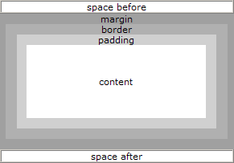

XSL-FO 文档存储在以.fo或.fob为后缀的文件中。以.xml为后缀存储的 XSL-FO 文档
也很常见，这样做的话可以使 XSL-FO 文档更易被 XML 编辑器存取。
XSL-FO 的文档结构类似这样：
<?xml version="1.0" encoding="ISO-8859-1"?> <fo:root xmlns:fo="http://www.w3.org/1999/XSL/Format"> <fo:layout-master-set> <fo:simple-page-master master-name="A4"> <!-- Page template goes here --> </fo:simple-page-master> </fo:layout-master-set> <fo:page-sequence master-reference="A4"> <!-- Page content goes here --> </fo:page-sequence> </fo:root>
XSL-FO 文档属于 XML 文档，因为也需要以 XML 声明来起始：
<?xml version="1.0" encoding="ISO-8859-1"?>
<fo:root>元素是 XSL-FO 文档的根元素。这个根元素也要声明 XSL-FO 的命名空间：
<fo:root xmlns:fo="http://www.w3.org/1999/XSL/Format"> <!-- 此处是 XSL-FO 文档的内容 --> </fo:root>
<fo:layout-master-set>元素含有一个或多个页面模板：
<fo:layout-master-set> <!-- 此处是所有的页面模板 --> </fo:layout-master-set>
<fo:simple-page-master>元素包含一个单一的页面模板。每个模板须有一个唯一的名称
(master-name)：
<fo:simple-page-master master-name="A4"> <!-- 此处是某一个页面模板 --> </fo:simple-page-master>
一个或多个<fo:page-sequence>元素可描述页面的内容。master-reference属性使用
相同的名称来引用simple-page-master模板：
<fo:page-sequence master-reference="A4"> <!-- 此处是页面内容 --> </fo:page-sequence>
注释：master-reference的值"A4" 实际上并没有描述某个预定义的页面格式。它仅仅是
一个名称。您可以使用任何名称，比如 "MyPage"、"MyTemplate" 等等。
XSL-FO 使用矩形框（区域）来显示输出。
XSL 格式化模型定义了一系列的矩形（区域）框来显示输出。
所有的输出都会被格式化到这些框中，然后会被显示或打印到某个目标媒介。
让我们研究一下下面这些区域：
XSL-FO 输出会被格式化到页面中。打印输出通常会进入分为许多分割的页面。浏览器输出 经常会成为一个长的页面。
XSL-FO 页面包含区域（Region）。
每个 XSL-FO 页面均包含一系列的 Regions（区）：
XSL-FO Regions 包含块区域（Block Area）。
XSL-FO 块区域可定义小的块元素（通常由一个新行开始），比如段落、表格以及列表。
XSL-FO 块区域可包含其他的块区域，不过大多数时候它们包含的是行区域（Line Area）。
XSL-FO 行区域定义了块区域内部的文本行。
XSL-FO 行区域包含行内区域（Inline Area）。
XSL-FO 行内区域定了行内部的文本（着重号、单字符以及图像等等）。
XSL-FO 在<fo:flow>元素内部定义输出。
XSL-FO 页面(Page)、流(Flow)以及块(Block)的关系：
内容“块”会“流”入“页面”中，然后输出到媒介。
XSL-FO 输出通常被嵌套在<fo:block>元素中，<fo:block>嵌套于<fo:flow>元素中，
<fo:flow>嵌套于<fo:page-sequence>元素中：
<fo:page-sequence>
<fo:flow flow-name="xsl-region-body">
<fo:block>
<!-- Output goes here -->
</fo:block>
</fo:flow>
</fo:page-sequence>
例子：
<?xml version="1.0" encoding="ISO-8859-1"?> <fo:root xmlns:fo="http://www.w3.org/1999/XSL/Format"> <fo:layout-master-set> <fo:simple-page-master master-name="A4"> </fo:simple-page-master> </fo:layout-master-set> <fo:page-sequence master-reference="A4"> <fo:flow flow-name="xsl-region-body"> <fo:block>Hello W3School</fo:block> </fo:flow> </fo:page-sequence> </fo:root>
XSL-FO 页面使用来自<fo:flow>元素的数据进行填充。
XSL-FO 使用<fo:page-sequence>元素来定义输出页面。
<fo:flow>元素。
XSL-FO 页面使用来自<fo:flow>元素的数据进行填充。
<fo:flow>包含所有被打印到页面的元素。
当页面被印满以后，相同的 page master 会被一遍又一遍地被使用，直到所有页面的页面 被打印为止。
<fo:flow>元素有一个名为"flow-name"的属性。
flow-name 属性的值定义<fo:flow>元素的内容会去往何处。
合法的值：
XSL-FO 使用名为 "Page Masters" 的页面模板来定义页面的布局。每个模板必须拥有一个 唯一的名称：
<fo:simple-page-master master-name="intro"> <fo:region-body margin="5in" /> </fo:simple-page-master> <fo:simple-page-master master-name="left"> <fo:region-body margin-left="2in" margin-right="3in" /> </fo:simple-page-master> <fo:simple-page-master master-name="right"> <fo:region-body margin-left="3in" margin-right="2in" /> </fo:simple-page-master>
在上面的例子中，三个<fo:simple-page-master>元素，定义了三个不同的模板。每个
模板（page-master）都有不同的名称。
第一个模板名为 "intro"。它可作为介绍页面的模板使用。
第二个和第三个模板名为 "left" 和 "right"。它们可被用于偶数和奇数页码的页面。
XSL-FO 使用下面的属性来定义页面尺寸：
XSL-FO 使用下面的属性定义页面边距：
XSL-FO 使用下面的元素来定义页面的区：
注释：region-before、region-after、region-start 以及 region-end 是主体区的一部分 。为了避免主体区的文本覆盖到这些区域，主题区的边距至少要等于其他区的尺寸。
图示：
这是从某个 XSL-FO 文档中提取的一个片断：
<fo:simple-page-master master-name="A4" page-width="297mm" page-height="210mm" margin-top="1cm" margin-bottom="1cm" margin-left="1cm" margin-right="1cm"> <fo:region-body margin="3cm"/> <fo:region-before extent="2cm"/> <fo:region-after extent="2cm"/> <fo:region-start extent="2cm"/> <fo:region-end extent="2cm"/> </fo:simple-page-master>
上面的例子中的主体的宽度可通过页面宽度减去左右边距以及region-body的边距来计算
得出：
297mm - (2 x 1cm) - (2 x 3cm) = 297mm - 20mm - 60mm = 217mm.
注释：region （region-start 和 region-end） 没有被计算进来。正如之前讲解过的， 这些区（region）是主体的组成部分。
内容“块”会“流”入“页面”中，然后输出到媒介。
XSL-FO 输出通常被嵌套在<fo:block>元素中，<fo:block>嵌套于<fo:flow>元素中，
<fo:flow>嵌套于<fo:page-sequence>元素中：
<fo:page-sequence>
<fo:flow flow-name="xsl-region-body">
<fo:block>
<!-- Output goes here -->
</fo:block>
</fo:flow>
</fo:page-sequence>
块是位于矩形框中的输出序列：
<fo:block border-width="1mm"> 这个输出块周围有一条一毫米的边框。 </fo:block>
由于块区域是矩形框，所以可共享许多公共的区域属性：
图示：

块是可被单独样式化的输出序列：
<fo:block font-size="12pt" font-family="sans-serif"> This block of output will be written in a 12pt sans-serif font. </fo:block>
<fo:block font-size="14pt" font-family="verdana" color="red"
space-before="5mm" space-after="5mm">
W3School
</fo:block>
<fo:block text-indent="5mm" font-family="verdana" font-size="12pt"
space-before="5mm" space-after="5mm">
At W3School you will find all the Web-building tutorials you
need, from basic HTML and XHTML to advanced XML, XSL, Multimedia
and WAP.
</fo:block>
结果：
请看上面的例子，如果要生成一个拥有许多标题和段落的文档，那么将会需要非常多的代码。
通常，XSL-FO 文档不会像我们刚才所做的那样对格式化信息和内容进行组合。通过 XSLT 的些许帮助，我们就可以把格式化信息置入模板，然后编写出更纯净的内容。
从文档移除 XSL-FO 信息：
<header> W3School </header> <paragraph> At W3School you will find all the Web-building tutorials you need, from basic HTML and XHTML to advanced XML, XSL, Multimedia and WAP. </paragraph>
添加 XSLT 转换：
<xsl:template match="header"> <fo:block font-size="14pt" font-family="verdana" color="red" space-before="5mm" space-after="5mm"> <xsl:apply-templates/> </fo:block> </xsl:template> <xsl:template match="paragraph"> <fo:block text-indent="5mm" font-family="verdana" font-size="12pt" space-before="5mm" space-after="5mm"> <xsl:apply-templates/> </fo:block> </xsl:template>
产生的结果是相同的。
XSL-FO 使用列表块（List Block）来定义列表。
有四种 XSL-FO 对象可用来创建列表：
<fo:block>。<fo:block>对象。一个 XSL-FO 列表实例:
<fo:list-block> <fo:list-item> <fo:list-item-label> <fo:block>*</fo:block> </fo:list-item-label> <fo:list-item-body> <fo:block>Volvo</fo:block> </fo:list-item-body> </fo:list-item> <fo:list-item> <fo:list-item-label> <fo:block>*</fo:block> </fo:list-item-label> <fo:list-item-body> <fo:block>Saab</fo:block> </fo:list-item-body> </fo:list-item> </fo:list-block>
效果：
* Volvo * Saab
XSL-FO 表格模型与 HTML 表格模型是非常不同的。有九种 XSL-FO 对象可用来创建表格：
XSL-FO 使用<fo:table-and-caption>元素来定义表格。它包含一个<fo:table>以及
一个可选的<fo:caption>元素。
<fo:table>元素包含：
<fo:table-column>元素
<fo:table-header>元素
<fo:table-body>元素
<fo:table-footer>元素
这些元素中的每一个都可能拥有一个或多个<fo:table-row>元素，而<fo:table-row>
同时会带有一个或多个<fo:table-cell>元素：
<fo:table-and-caption>
<fo:table>
<fo:table-column column-width="25mm"/>
<fo:table-column column-width="25mm"/>
<fo:table-header>
<fo:table-row>
<fo:table-cell>
<fo:block font-weight="bold">Car</fo:block>
</fo:table-cell>
<fo:table-cell>
<fo:block font-weight="bold">Price</fo:block>
</fo:table-cell>
</fo:table-row>
</fo:table-header>
<fo:table-body>
<fo:table-row>
<fo:table-cell>
<fo:block>Volvo</fo:block>
</fo:table-cell>
<fo:table-cell>
<fo:block>$50000</fo:block>
</fo:table-cell>
</fo:table-row>
<fo:table-row>
<fo:table-cell>
<fo:block>SAAB</fo:block>
</fo:table-cell>
<fo:table-cell>
<fo:block>$48000</fo:block>
</fo:table-cell>
</fo:table-row>
</fo:table-body>
</fo:table>
</fo:table-and-caption>
以上代码的输出：
| Car | Price |
|---|---|
| Volvo | $50000 |
| SAAB | $48000 |
| 对象 | 描述 |
| basic-link | 定义一个链接的起始资源 |
| bidi-override | Overrides the default Unicode BIDI direction |
| block | 定义一个输出块（比如段落和标题） |
| block-container | 定义一个块级的引用区域（reference-area） |
| character | 定义一个字符，该字符会被映射为供呈现的字形 |
| color-profile | 定义样式表的一个颜色配置文件 |
| conditional-page-master-reference | 规定一个当所定义的条件成立时使用的page-master |
| declarations | 组合针对某个样式表的全局声明 |
| external-graphic | 用于图像数据位于XML结果树之外的某个图形 |
| float | 典型的用法是，在页面起始位置的某个单独的区域放置一幅图片，或者把一幅图片放置到一侧，而内容则流动至图片的旁边。 |
| flow | 包含所有被输出到页面的元素 |
| footnote | 定义在页面的region-body内部的一个脚注 |
| footnote-body | 定义脚注的内容 |
| initial-property-set | 格式化<fo:block>的第一行 |
| inline | 通过背景或者将其包围在一个边框中，来格式化文本的某个部分 |
| inline-container | 定义一个行内的引用区域（inline reference-area） |
| instream-foreign-object | 用于行内图形（inline graphics）或用于普通对象，其中对象的数据作为<fo:instream-foreign-object>的后代存在。 |
| layout-master-set | 存有所有用在文档中的master |
| leader | 用来生成"."由内容表格中的页码来分隔标题，或者创建表单中的输入域，或者创建水平线 |
| list-block | 定义列表 |
| list-item | 包含列表中的每个项目 |
| list-item-body | 包含列表项的内容或主体 |
| list-item-label | 包含列表项的标号（有代表性的是数据、字符等等） |
| marker | 与fo:retrieve-marker使用来创建连续的页面或页脚 |
| multi-case | 包含 XSL-FO对象的每个供选择的子树（在<fo:multi-switch>内部）。父元素<fo:multi-switch>会选择显示那个选项并隐藏其余的选项。 |
| multi-properties | 用来在两个或更多的属性集（property-sets）间转换 |
| multi-property-set | 规定一个可供选择的属性集，这个属性集会被根据用户代理的状态来进行应用。 |
| multi-switch | 存有一个或多个<fo:multi-case>对象，并控制它们之间的切换（通过<fo:multi-toggle>激活） |
| multi-toggle | 用来切换到另一个<fo:multi-case> |
| page-number | 表示当前的页面 |
| page-number-citation | 为页面引用页码，此页面包含首个由被引用对象返回的标准区域。 |
| page-sequence | 一个针对页面输出元素的容器。在其中一个<fo:page-sequence>对象针对每个页面布局。 |
| page-sequence-master | 规定使用哪个simple-page-master，以及使用次序。 |
| region-after | 定义页脚 |
| region-before | 定义页眉 |
| region-body | 定义页面主体 |
| region-end | 定义页面的右侧栏 |
| region-start | 定义页面的左侧栏 |
| repeatable-page-master-alternatives | 定义一套simple-page-master的副本 |
| repeatable-page-master-reference | 规定一个简单的simple-page-master的副本 |
| retrieve-marker | 与<fo:marker>一同使用来创建连续页眉或者页脚 |
| root | XSL-FO文档的根（顶）节点 |
| simple-page-master | 定义页面的尺寸和形状 |
| single-page-master-reference | 规定用在页面序列的某个给定的点的一个 |
| static-content | 包含在许多页面上重复的静态内容（比如页眉和页脚） |
| table | 格式化一个表格的表格式的材料 |
| table-and-caption | 格式化一个表格及其标题 |
| table-body | 表格行和表格单元的容器 |
| table-caption | 包含一个表格的标题 |
| table-cell | 定义表格单元 |
| table-column | 格式化表格的列 |
| table-footer | 定义表格的页脚 |
| table-header | 定义表格的页眉 |
| table-row | 定义表格的行 |
| title | 为页面序列定义一个标题 |
| wrapper | 为一组XSL-FO对象规定继承属性 |